Asset Layer landing page redesign
Attracting users and reducing churn, in two weeks.
- Client
- Asset Layer
- My role
- Lead designer
- Time
- 2 weeks
- Tools
- Figma, Zoom for user testing
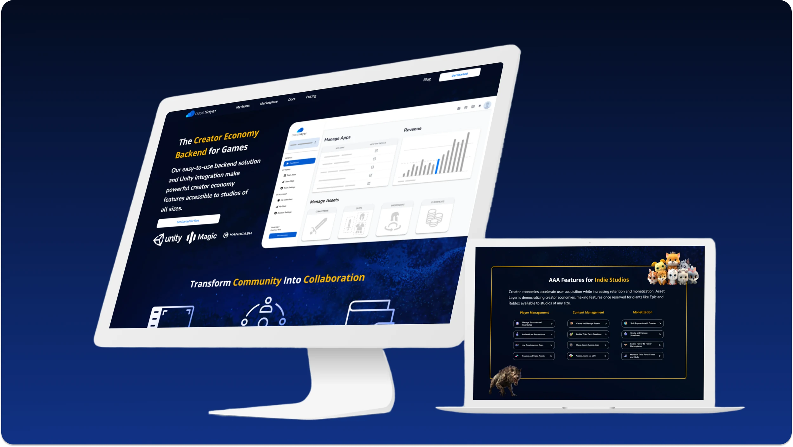
The short version
About a minuteThe problem
Too many new visitors to AssetLayer.com left before creating an account or clicking through to learn more. The product and its audience had also changed since the page was written, so it no longer described what Asset Layer offered.
What I did
I had about two weeks, testing included, and the page had to stay simple enough for engineering to build quickly. I kept the parts of the old page that worked and cut the rest. Competitive research and sessions with people from our community pointed the same way: the page leaned on copy too heavily and looked sterile. We adopted a rule that anything we couldn’t explain in two sentences got an illustration, and moved to a more colorful theme inside the brand guidelines.
The result
More people created an Asset Layer account and app on their first visit. Visitors stayed on the page longer, and more of them clicked through to the docs and blog.
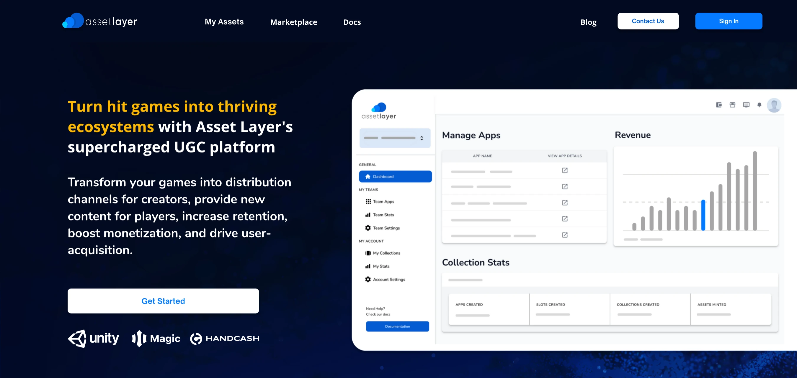
That’s the essential part. The full case study has 6 more sections on research, process and design decisions.
Context and constraints
You only get one chance at a first impression, and for a SaaS company the landing page is where it happens. When we saw a high churn rate for new visitors to AssetLayer.com, improving that impression became a priority.
Asset Layer is a UGC platform that turns games into creator ecosystems. Developers use it to fast track their apps into ecosystems with exchangeable assets, and third party creators can submit their own content to those apps.
It was also a startup. The design had to stay lightweight so developers weren’t handed bloat, and I watched for scope creep throughout. As lead designer I built the large majority of the mockups, prototypes and components for this project myself in Figma.
The goal
A new lightweight landing page that keeps more new visitors and accurately reflects the product, leading to more sign ups and more interaction with Asset Layer.
Competitive research
With limited resources, it mattered that we didn’t build things that wouldn’t help. I looked at competitors’ landing pages to see what they were doing right or wrong, and what our users probably already expected from a SaaS product in this space. That research shaped the content of the page as well as its tone and look.
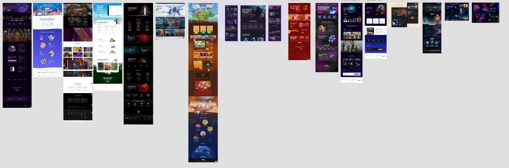
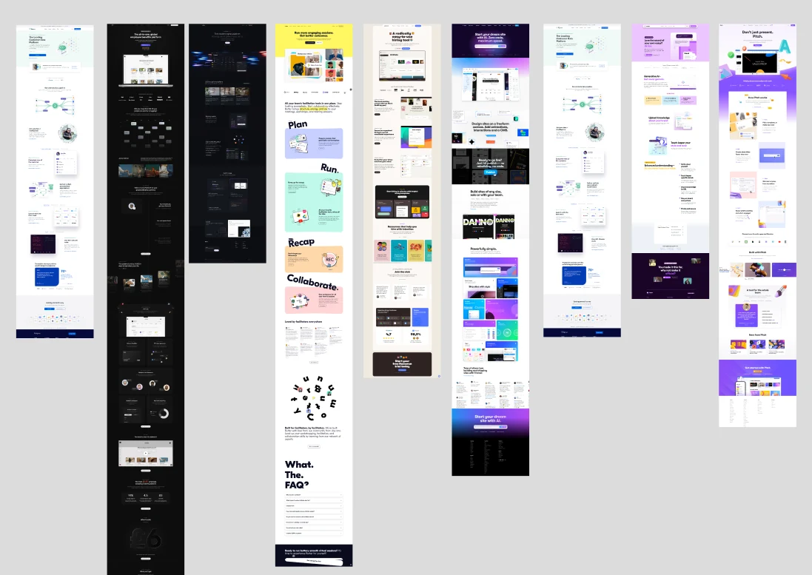
What was wrong with the old page
This was a quick redesign of an existing page, so starting from scratch made no sense. We kept the sections that were working and removed the ones that weren’t.
The biggest flaw, from feedback and from user testing, was how much the page relied on copy to explain the product. People felt overwhelmed and weren’t sure what to read first.
The middle section, titled “Asset Layer is a Game Changer”, confused people more than we expected. In testing we asked users to read it and describe what they understood. Many had trouble following the images and explanations, so we put more weight on simplicity.
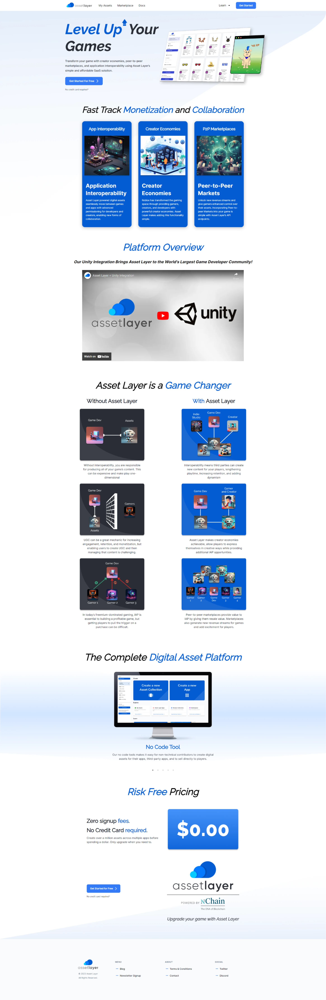
The design process
Testing and iterating
Alongside the competitive research, we spent a lot of time with users from our community, gathering feedback on readability and looks. Each new draft went in front of customers and the team. That loop of tweaking and testing exposed many of our assumptions, and it’s what led us to rethink the aesthetics and the amount of copy.
Establishing a theme
The old page lacked character. It was sterile and uninviting. We went for something sleeker and more futuristic, shifting away from black and white toward colorful gradients with blues and yellows, more images, and a more playful layout, all within our brand guidelines.
When we showed the new theme to users, they were noticeably more excited about the product. The team believes this change was a big part of the improved numbers after launch.
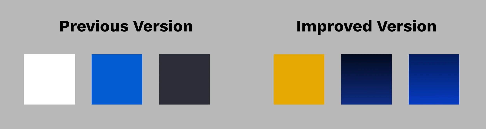
Simplifying the copy
Describing a complex system in short, simple language is tricky. Where something couldn’t be explained in two sentences, we paired it with an illustration. The page became easier to read and better balanced between image and text.
Design breakdown
The page, one block at a time.
Introductory block
The intro block has a quick description of the product, the main call to action to get started, and a simplified image of the product. A few partner logos establish credibility. With this design we saw a significant increase in visitors clicking the call to action.
Descriptive block
The elevator pitch, common across SaaS competitors. Compared with the previous version, it leans on images to give each feature context. On the live site it animates as you scroll.
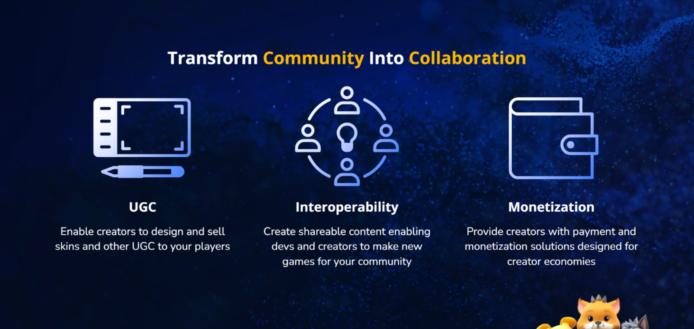
Features block
The most detailed part of the page: a list of platform features across different use cases, each linking to the relevant documentation and paired with an icon so the section doesn’t feel copy heavy. Game assets give the page a more playful look, an idea that came from the competitive research.
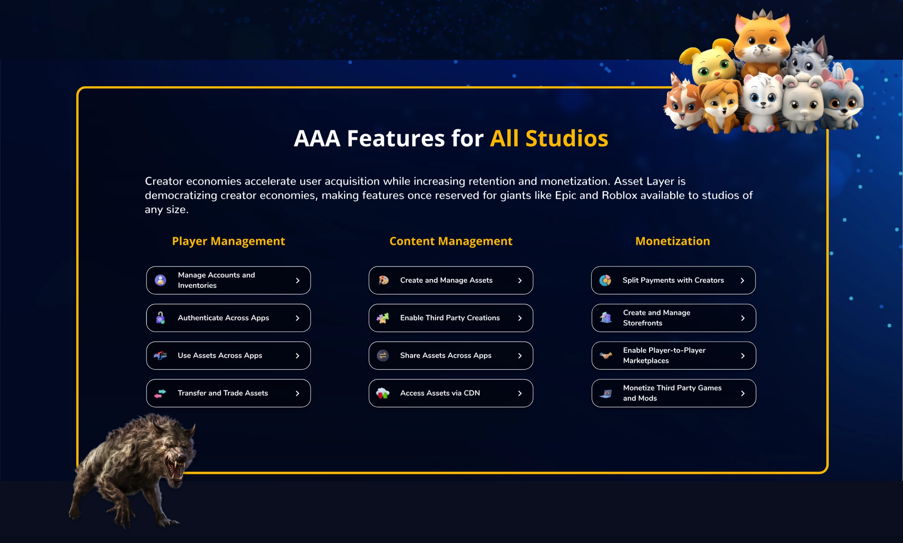
Demo block
This carried over from the original page. Customers told us they wanted to see the product at work, and the video shows how easy it is to integrate with their application.
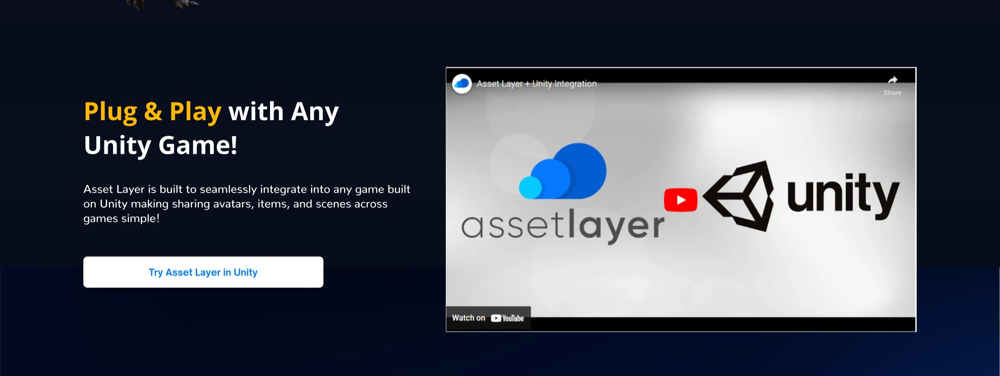
Example applications
Competitive research showed the importance of real applications built on the platform. We featured two built by the internal team and designed by me, in a carousel, since they are best shown with several images and little caption text. One of them is live at Rolltopia.games.
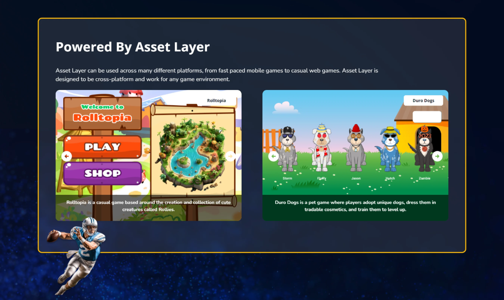
Contact form
Several competitors had a calendar feature, and many of our customers wanted to talk through features on a call. This let them book a meeting with the team quickly. Almost every user who scheduled a call went on to create an Asset Layer app.
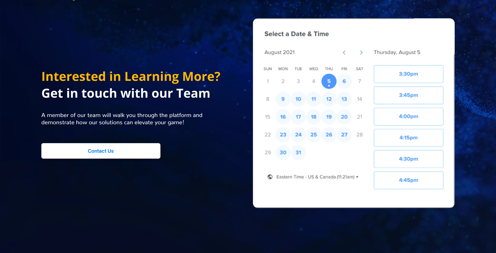
Footer
The footer is a directory. Ours links to things outside the top nav: the blog, social accounts, and other apps built on the platform.
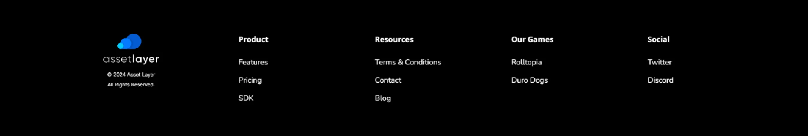
Mobile
The Asset Layer app is used almost entirely on desktop, but our analytics showed that many people visit for the first time on a phone, usually from social posts or the blog. I designed with breakpoints and several Figma mockup variations so the page works across device sizes.
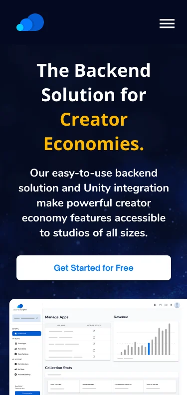
Final design and what came after
The full page is below, though the live site at AssetLayer.com shows it better, with its animations and breakpoints.
After the changes went live, more users created an Asset Layer account and app on their first visit. Average time on the page went up, and so did the number of people clicking a secondary link such as documentation or the blog.
Some parts of the site still weren’t performing as well as they could, so the plan was to keep adjusting copy and images based on feedback and analytics.
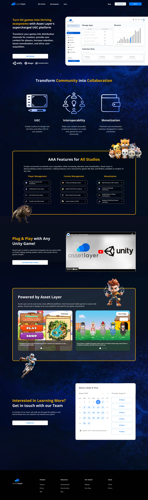